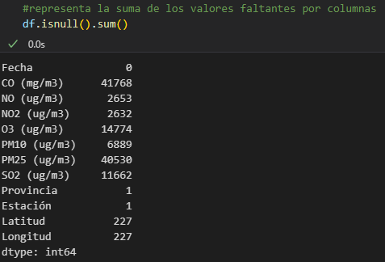
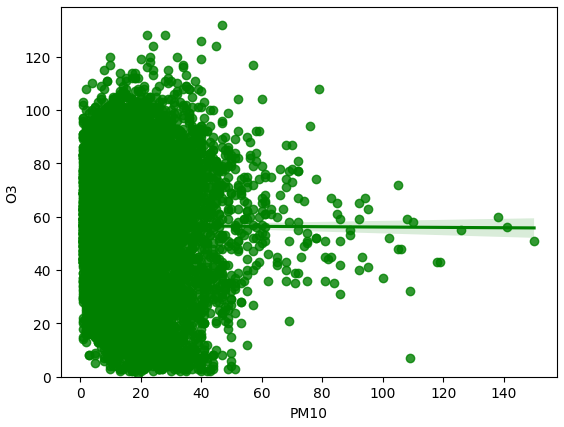

Indice
- Introducción
- Metodología
- EDA
- Ánalisis descriptivo
- Ajustes de los tipos de variables
- Detección y tratamiento de datos ausentes
- Identificación de valores atípicos
- Ánalisis de correlación de variables
- Conclusiones
Introducción
Una de las tareas habituales a las que se enfrenta todo analista o científico de datos es la de entender las características de las variables con las que se está trabajando. Explorar, entender y evaluar la calidad de los datos es una condición previa al procesamiento de los mismos. Estas acciones son necesarias para tener una aproximación a los datos antes de realizar cualquier análisis y, además, porque muchas de las técnicas estadísticas de análisis de datos presuponen el cumplimiento de unas condiciones previas para poder garantizar la objetividad e interoperabilidad de los datos. Por ejemplo, es necesario detectar y tratar los datos atípicos dado su impacto sobre algunos estadísticos, como el cálculo de la media. Una forma de llevar a cabo este procesamiento es mediante análisis exploratorios de datos (AED) o Exploratory data analysis (EDA).
Para lograr la máxima comprensión del alcance de esta guía es recomendable que el lector posea competencias básicas en el lenguaje Python que es el elegido para ilustrar mediante ejemplos, las diferentes etapas involucradas en un EDA. Si no es así, te animamos igualmente a continuar la lectura de esta guía dado que, como verás a continuación, dispones de una interesante bibliografía que además de ayudarte a entender EDA, te permitirá conocer y obtener el máximo partido de este potente lenguaje de programación.
Metodología
Con esta guía se pretende facilitar al lector el aprendizaje de las técnicas propuestas mediante el desarrollo de un caso práctico, pudiendo experimentar de forma autodidacta con datos públicos y herramientas tecnológicas Open Source y gratuitas. El ejemplo que se detalla en esta guía utiliza datos abiertos y se pone a disposición del lector para que el código se pueda replicar o servir de base para otros análisis de datos.
EDA
Para realizar esta guía hemos tomado como referencia el análisis exploratorio de datos descrito en el la publicación Guia practica de introducción al Analisis Exploratorio de Datos disponible de forma gratuita y que además incluye una gran cantidad de ejemplos prácticos. El EDA que te proponemos seguirá los siguientes pasos:
Análisis descriptivo
Una vez que se ha obtenido el dataset sobre el registro de la calidad del aire en la Comunidad Autónoma de Castilla y León del catálogo de datos abiertos y tenemos cargados los datos en nuestro entorno de desarrollo para posteriormente llevar a cabo alguna tarea de reutilización de los mismos como, por ejemplo, una visualización interactiva o el desarrollo de una aplicación, es recomendable obtener una vista descriptiva sobre el contenido de las tablas de datos con las que vas a trabajar. Con este fin aplicaremos funciones de estadística descriptiva para explorar la estructura del conjunto de datos y examinar los datos y variables que presenta. Asimismo, será muy útil el uso de determinadas representaciones graficas que te ayudarán a intuir la forma que poseen las distribuciones de los datos.
El objetivo principal aquí es demostrar la facilidad y el potencial de las herramientas de Python para el análisis de datos. Como observaran a continuación con este lenguaje es posible de una forma clara realizar las mismas tareas que con R Studio e incluso ir un paso por delante.
Para la aplicación de toda esta EDA utilizaremos la versión de Python 3.12.4 y seguiremos los siguientes pasos desde cero.
Instalación de Python.
Podemos hacer una instalación de Python desde la página web de Python o abrir una consola de comando o terminal y ejecutar >>pip install python
Instalación de paquetes requeridos
Para instalar un paquete solo basta con escribir en la terminal y ejecutar >>pip install (nombre_del_paqute)
Paquetes importantes
El IDE que estaremos usando será Jupyter Notebook se puede ejecutar desde Anaconda o simplemente instalarlo mediante un >>pip install jupyter notebook
1. Visualización de datos
2. Tipo de datos y resumen del set
3. Vista de gráficos (Ejemplo PM10)
4. Mejor experiencia de visualización
Hasta este punto sin dudas con Python se puede obtener una mejor experiencia de visualización y más conocimientos acerca de los datos a través de una interfaz limpia y sin muchas complicaciones en el momento de escribir el código.
Ajuste de los tipos de variables
Una de las primeras comprobaciones que hay que hacer tras cargar los datos en el entorno de trabajo, es verificar que cada variable se ha almacenado con el tipo de valor que corresponde. Por ejemplo, que las variables que contienen valores numéricos representan números y las cualitativas o categóricas están tipificadas como cadenas de caracteres y contienen una cantidad finita de elementos.
Tipos de datos y sus equivalencias en Python nativo
| Pandas dtype | Native python | description |
|---|---|---|
| object | string | números y cadenas |
| int64 | int | números enteros |
| float64 | float | números con coma |
| datetime64 | N/A | tiempo |
Para convertir un tipo de dato en este caso de object a string se puede hacer uso del siguiente comando.
Detección de datos ausentes
La presencia de datos ausentes, perdidos, missing values, o celdas vacías, representados habitualmente en Python como NaN, es una problemática habitual en muchos conjuntos datos. La mayoría de las veces se debe a ellos en la transcripción de los datos o problemas durante la recogida de datos, por ejemplo, debido a la imposibilidad para obtener cierta medida u observación.
Tratar con conjuntos de datos en los que existen datos ausentes puede generar problemas a la hora de aplicar diferentes análisis estadísticos o en la generación de representaciones gráficas. A fin de evitar problemas futuros, es necesario aprender a detectar y aplicar algún tipo de tratamiento.
Tambien se pueden rellenar datos perdidos con el siguiente script
>>df.fillna(x)
Identificación de valores atípicos
Un valor atípico u outlier, es una observación significativamente distinta del resto de datos que presenta una variable, de tal magnitud que se puede considerar un valor anómalo. Estos valores pueden afectar a tareas siguientes pudiendo llegar a modificar los resultados. Es necesario detectarlos y tratarlos para poder disminuir su influencia en los análisis posteriores o, en casos muy extremos, eliminarlos del conjunto de datos.
Lo más recomendable para el tratamiento de los datos atípicos es reducir su posible influencia en los análisis. Aunque no es objeto de esta guía, hay que mencionar que existen métodos estadísticos robustos aplicables en los análisis, que permiten disminuir el impacto de los outliers. Estos métodos logran que los resultados se vean menos afectados por la presencia de valores atípicos.
Variables continuas
Para mostrar el proceso de detección de valores atípicos en una variable continua, utilizaremos como ejemplo la variable numérica O3. El proceso es exactamente igual para el resto de variables numéricas que presente la tabla.
Como podemos observar en el histograma, los niveles de O3 en el aire están mayoritariamente en un rango aproximado de, entre 0 y 100 µg/m3. Por encima de este valor la frecuencia es mínima, y podrían considerarse que es el rango de concentración de los valores atípicos. Para detectar esos valores atípicos, utilizaremos la representación más adecuada para esta tarea: un gráfico de cajas y bigotes. Las flechas azules indican los valores atípicos o que se encuentran fuera del rango de valores.
Análisis de correlacion de variables
La correlación (valor r, en el gráfico siguiente), determina la relación lineal entre dos o más variables, es decir, la fuerza y la dirección de una posible relación entre variables. Dicho de otra forma, si los valores de una variable tienden a subir, los de otra u otras variables, harán lo mismo si están correladas positivamente o a la inversa, si lo están negativamente. Esto no quiere decir, que una correlación entre variables indique una relación causa-efecto. De hecho, puedes encontrar cientos de ejemplos de correlaciones ficticias con las que puedes pasar un rato bien divertido. ¿En qué nos puede ayudar el análisis de correlación entre variables? La existencia de una relación fuerte en un determinado sentido entre dos variables podría inferir redundancia de información, pudiendo llegar a la eliminación de una de ellas con el fin de disminuir la complejidad en el procesamiento y análisis futuro de los datos. Esta práctica es habitual en EDA y está vinculada con la técnica de análisis de componentes principales (en muchos escritos lo verás cómo análisis PCA, por sus siglas en inglés)
Sin entrar a definir esta técnica, la correlación se mide a través del coeficiente de correlación “r” que oscila entre -1 y 1 . La correlación positiva perfecta se establece con el valor +1 e indica que los valores de las variables varían de una forma similar y la correlación negativa perfecta se establece con el valor –1 , indicando que varían de forma inversa. No existe relación entre las variables, es decir, son independientes, cuando el coeficiente es 0. A continuación, se muestra una imagen que representa diferentes niveles de correlación entre variables mediante un gráfico de dispersión
Aparte de hallar una correlacion entre las variables tambien podemos:
Y mucho pero mucho más
Conclusiones
El Análisis Exploratorio de Datos o EDA es el conjunto de técnicas estadísticas cuyo fin es explorar los datos de forma preliminar a la aplicación de cualquier proceso posterior como una investigación científica o una visualización interactiva de datos. Se trata de un proceso fundamental para el entendimiento básico de los datos y las relaciones que existen entre ellos. Como hemos visto, a través de métodos sencillos, el EDA permite, entre otras acciones, organizar y preparar los datos, detectar fallos en el diseño y recogida de los mismos, el tratamiento y evaluación de los datos ausentes, la identificación de los casos atípicos y la posible relación que puedan existir entre las variables. Es verdaderamente trascendental dedicar tiempo a aplicar estos métodos para que los resultados obtenidos a partir de los análisis estadísticos aplicados a esos datos sean altamente fiables y muestren la realidad de los mismos.